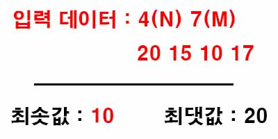

백준 2805. 나무 자르기
- https://www.acmicpc.net/problem/2805
-
문제 :
상근이는 나무 M미터가 필요하다. 근처에 나무를 구입할 곳이 모두 망해버렸기 때문에, 정부에 벌목 허가를 요청했다. 정부는 상근이네 집 근처의 나무 한 줄에 대한 벌목 허가를 내주었고, 상근이는 새로 구입한 목재절단기를 이용해서 나무를 구할것이다.
목재절단기는 다음과 같이 동작한다. 먼저, 상근이는 절단기에 높이 H를 지정해야 한다. 높이를 지정하면 톱날이 땅으로부터 H미터 위로 올라간다. 그 다음, 한 줄에 연속해있는 나무를 모두 절단해버린다. 따라서, 높이가 H보다 큰 나무는 H 위의 부분이 잘릴 것이고, 낮은 나무는 잘리지 않을 것이다. 예를 들어, 한 줄에 연속해있는 나무의 높이가 20, 15, 10, 17이라고 하자. 상근이가 높이를 15로 지정했다면, 나무를 자른 뒤의 높이는 15, 15, 10, 15가 될 것이고, 상근이는 길이가 5인 나무와 2인 나무를 들고 집에 갈 것이다. (총 7미터를 집에 들고 간다) 절단기에 설정할 수 있는 높이는 양의 정수 또는 0이다.
상근이는 환경에 매우 관심이 많기 때문에, 나무를 필요한 만큼만 집으로 가져가려고 한다. 이때, 적어도 M미터의 나무를 집에 가져가기 위해서 절단기에 설정할 수 있는 높이의 최댓값을 구하는 프로그램을 작성하시오. -
입력 :
첫째 줄에 나무의 수 N과 상근이가 집으로 가져가려고 하는 나무의 길이 M이 주어진다. (1 ≤ N ≤ 1,000,000, 1 ≤ M ≤ 2,000,000,000)
둘째 줄에는 나무의 높이가 주어진다. 나무의 높이의 합은 항상 M보다 크거나 같기 때문에, 상근이는 집에 필요한 나무를 항상 가져갈 수 있다. 높이는 1,000,000,000보다 작거나 같은 양의 정수 또는 0이다. -
출력 :
적어도 M미터의 나무를 집에 가져가기 위해서 절단기에 설정할 수 있는 높이의 최댓값을 출력한다. -
풀이 :
절단기 높이의 최솟값과 최댓값을 설정하고 그 사이의 임의의 값을 설정하고 비교하면서 범위를 좁혀간다.
최솟값은 0으로 최댓값은 입력받은 데이터 중 가장 큰 값으로 설정한다.
최솟값과 최댓값의 중간값을 이용해 가져갈 수 있는 나무의 길이의 합을 구한다. 이 때 절단기 높이보다 나무의 길이가 작거나 같으면 잘린 나무가 생기지 않으므로 계산에 포함하지 않는다.

잘린 나무의 길이의 합이 M보다 작을 경우 최댓값을 중간값으로 M보다 클 경우 최솟값을 중간값으로 변경한다.
이러한 과정을 반복해서 최솟값과 최댓값의 차이가 1이 되면 둘 중에 정답이 있으므로 확인하는 작업을 해야한다.
최댓값으로 나무를 잘랐을 때 잘린 나무의 길이의 합이 M보다 작으면 최솟값을 출력 아니면 최댓값을 출력한다.